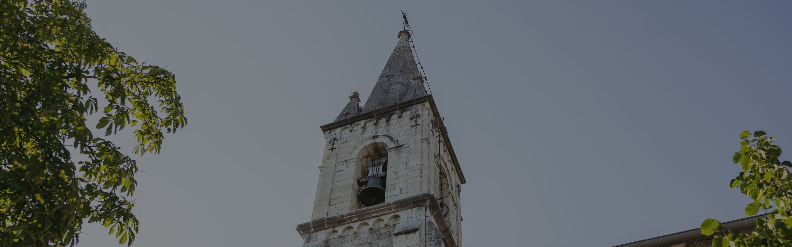
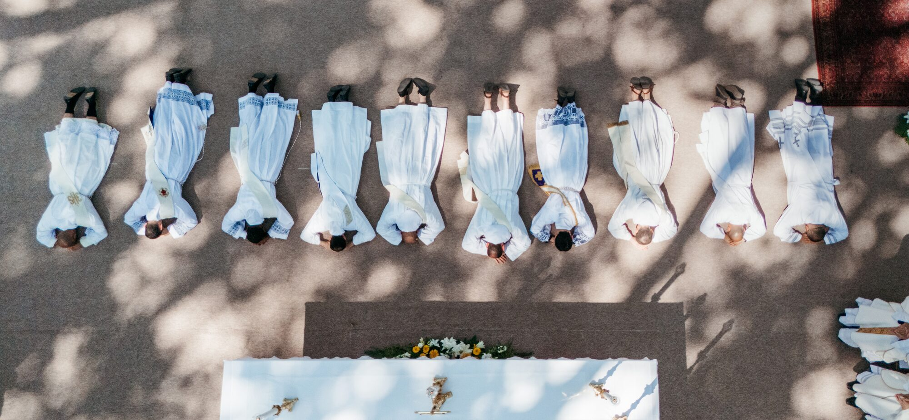
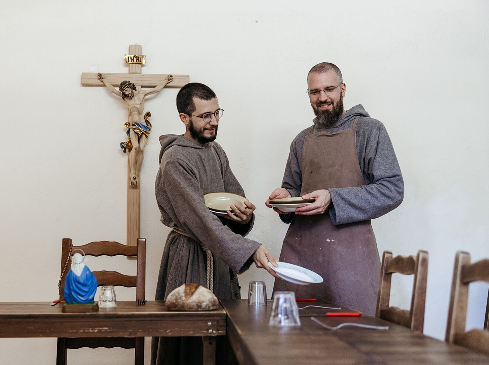

Le blog de la communauté
Grandir dans la foi et inspirer les cœurs


Franciscanisme
Les protomartyrs de l'ordre franciscain
À Marrakech, en 1220, le sultan décapite six frères franciscains : l'histoire des protomartyrs et de la vocation qui en naquit…
Lire la suite →
Événements
[PLACEHOLDER] Ordination sacerdotale à Callas
Le récit de la journée d'ordination vécue par la communauté et par les fidèles…
Lire la suite →
Spiritualité
[PLACEHOLDER] Vivre la communion fraternelle au quotidien
Comment la vie commune devient une école quotidienne de charité et de compassion…
Lire la suite →
Franciscanisme
Sainte Véronique Giuliani et la Vierge Marie
La vie mystique d'une clarisse capucine et sa relation avec la Vierge Marie, vécue dès l'enfance…
Lire la suite →Aucun article ne correspond à cette recherche.
Soutenez les frères et leur apostolat.
Votre contribution permettra à la communauté de vivre concrètement la compassion et la communion de l'Évangile.
SOUTENEZ-NOUS